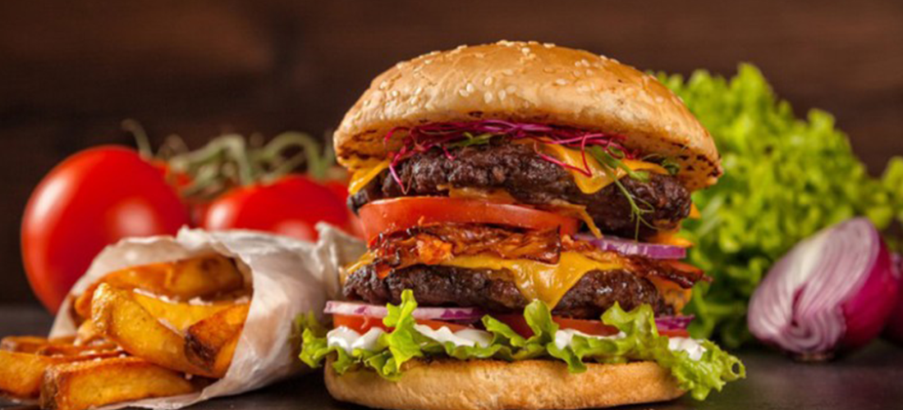
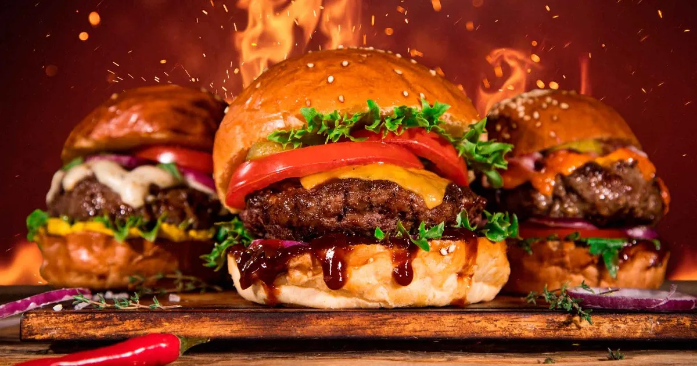

La hamburguesa es una de las creaciones gastronómicas más populares y deliciosas del mundo, sin mencionar que es sencilla de preparar en sus infinitas presentaciones, con queso con papas, con pepinos de la forma que se les pueda ocurrir. Debido a su popularidad, se creó el Día Internacional de la Hamburguesa.
Construir la hamburguesa perfecta que combine buen sabor y buen montaje es complicado, aunque si tienes un par de trucos profesionales, la cosa cambia. Le consultamos a muchisimos chefs culinarios y el secreto es que tiene que estar crujiente por fuera y jugosa por dentro, por esa razon la nuestra es deliciosa.
Lo que principalmente marca la diferencia en una hamburguesa gourmet frente a una hamburguesa normal es esencialmente que el pan, la carne, los quesos y las salsas sean de alta calidad. En "FranBurguers el pan se elabora por un artesano, hace que el pan sea fresco.¡Los complementos también tienen que estar a la altura!